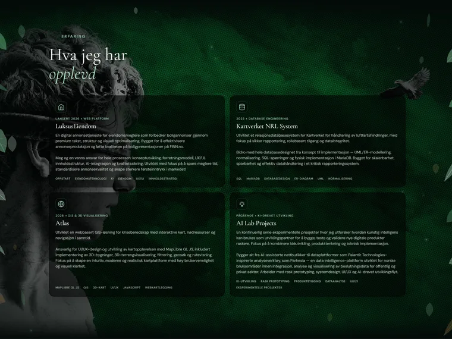

Om meg
Jeg er Yones Feili, en IT-student og kreativ utvikler med interesse for design, teknologi og gjennomarbeidede digitale løsninger. Ved Universitetet i Agder studerer jeg IT og informasjonssystemer. Gjennom egne prosjekter og praksis hos Kartverket kombinerer jeg problemløsning med et sterkt visuelt blikk.
Utdanning & praksis
-
Tangen videregående skole Studiespesialisering
-
Universitetet i Agder IT og informasjonssystemer
-
Kartverket Praksis / internship
Ferdigheter
- JavaScript
- HTML & CSS
- C#
- SQL & MariaDB
- PostGIS
- MapLibre
- UI/UX-design
- Responsivt design
Utvalgte arbeider
Prosjekter
Tre ulike problemrom — fra visuell KI til kart og kritiske data. Hvert prosjekt kombinerer tydelig design med teknologi bygget rundt menneskene som skal bruke den.
Kontakt
La oss
snakke
Har du et prosjekt, spørsmål, eller vil bare ta en prat? Ikke nøl — skriv til meg.
E-post
Yonesmf@uia.no
Sted
Kristiansand, Norge
Utdanning
UiA — IT & Informasjonssystem